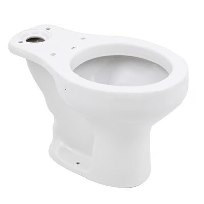

Vaso sanitário para caixa acoplada com saída vertical branco - Celite

Descrição
Procurando a louça perfeita para seu banheiro? O vaso sanitário para caixa acoplada Azálea da Celite apresenta saída de esgoto vertical e formato oval. Verifique a caixa acoplada indicada para sua bacia sanitária!
R$ 364,90/cada
Vendido e entregue por Itacerâmica
Descrição detalhada
| Produto | Vaso sanitário avulso para caixa acoplada |
|---|---|
| Modelo | Azálea |
| Marca | Celite |
| Sáida do vaso | Vertical |
| Formato | Oval |
| Cor | Branco |
| Altura | 39,00 cm |
| Largura | 38,00 cm |
| Profundidade | 64,00 cm |
| Acompanha assento sanitário | Não |
| Acompanha fixação | Não |
| Conteúdo da embalagem | Vaso sanitário |
| Garantia do fabricante | 120 meses |